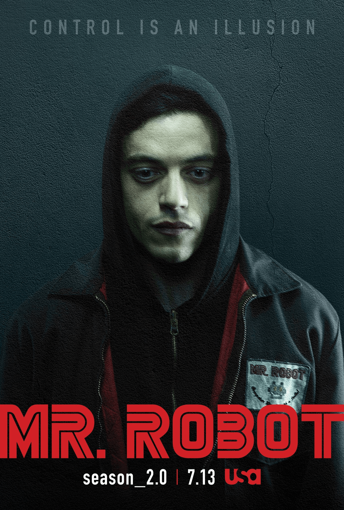
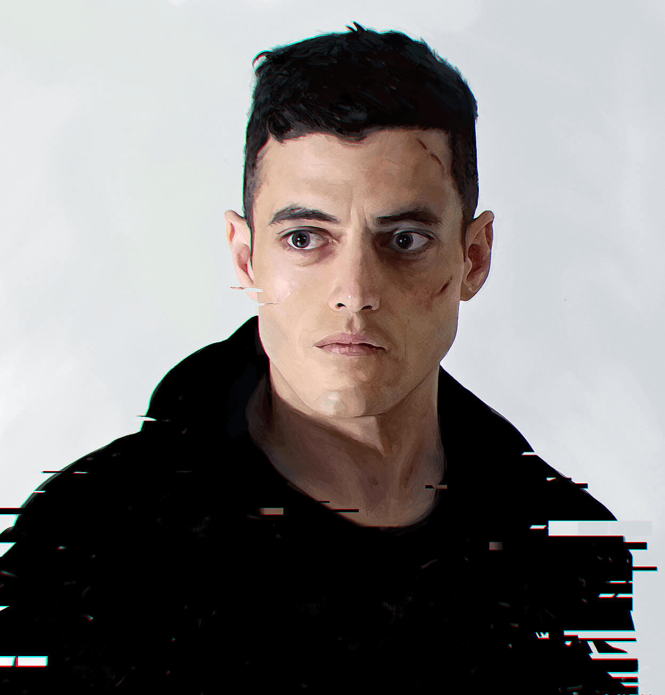

Mr. Robot
Año de estreno: 2015
País de origen: EE.UU
Género: Tecno-thriller
Creado por: Sam Esmail
Sinopsis
Nuestro protagonista Elliot Alderson, un experto en el ámbito de la ciberseguridad vive una vida relativamente normal hasta que unos ciberterroristas se contactan con el y decide formar parte de su "Movimiento Social"
Numero de temporadas
- Temporada 1: 10 episodios
- Temporada 2: 12 episodios
- Temporada 3: 10 episodios
- Temporada 4: 13 episodios
Poster promocional
Personajes principales
| Nombre | Foto | Descripción |
|---|---|---|
| Elliot Alderson |  | Es una persona introvertida con multiples trastornos mentales al mismo tiempo que es un prodigio de las computadoras. |
| Tyrell Wellick | Es un alto rango de la empresa dueña del mundo en Mr. Robot, el cual debido a su ambición tiene actidudes cuestionables dentro de la serie. | |
| Darlene ? | Sin spoiler, es una pieza fundamental dentro de la organización ciberterrorista de la cual Elliot decide formar parte. |